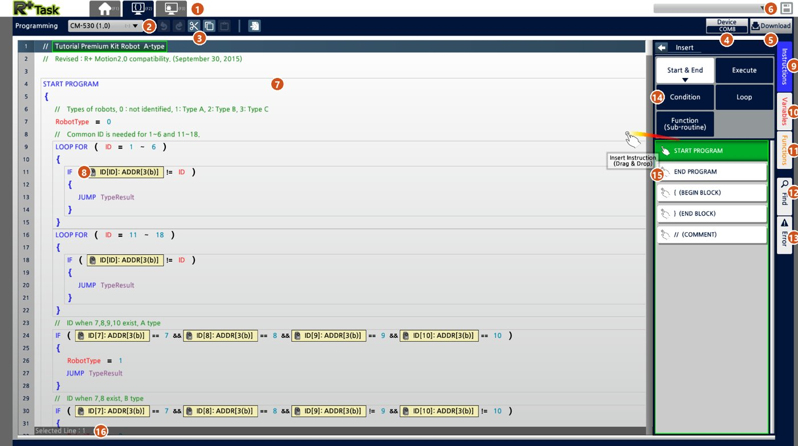
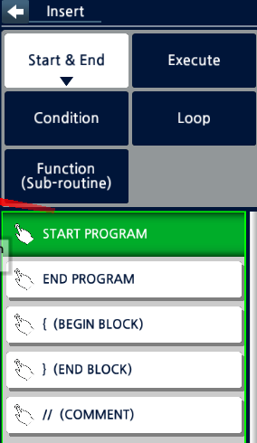
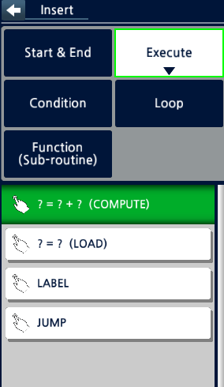
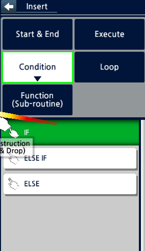
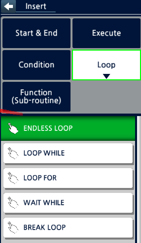
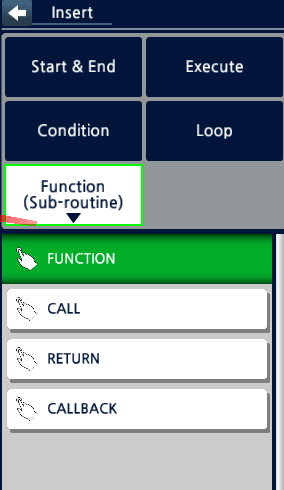
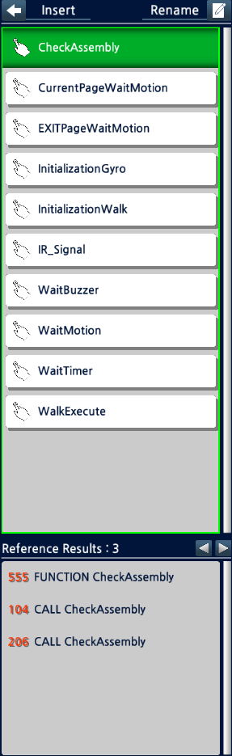
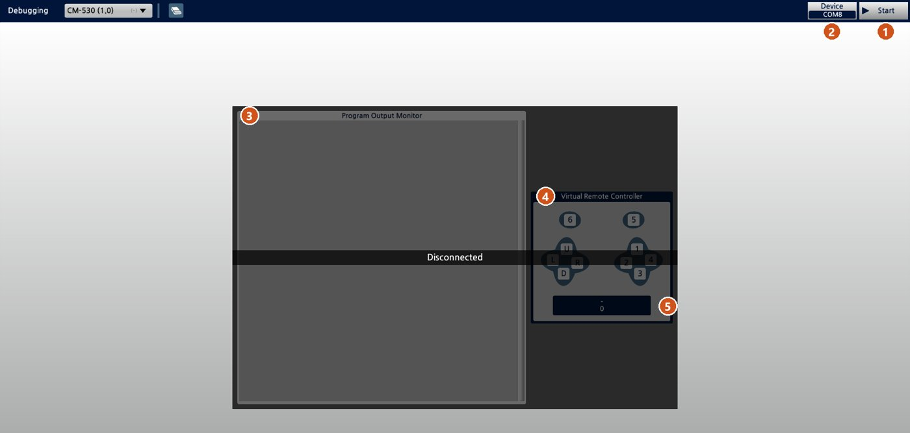

R+Task: как писать проги и не сойти с ума
RoboPlus Task для CM-530. Всё здесь проверено на живом роботе. В инструкции ROBOTIS этого почти нет.
Потолки R+Task, в которые я упёрся
| Потолок | Что на деле | Как жить |
|---|---|---|
| Переменные | 50 штук, 51-я не даёт залить прогу. Редактор считает на 1–2 больше, чем есть в файле | держать до 47–48, паковать два числа в одну (п.2) |
Пауза wait … timer_num | стоит около 1 с, вся прога в это время стоит | в главном цикле не ждать, а проверять таймер (п.1) |
| Скорость цикла | около 2700 проходов в секунду, если нет пауз | этого хватает, тормозят только паузы |
| Камера во время движения | пока играет страница движения, шина серво занята, и камеру нормально не прочитать | читать камеру между шагами. Из-за этого я ушёл на свою прошивку |
| Опрос серво | при частом чтении во время движения идут ошибки шины | не чаще раза в 0.1–0.15 с (п.5) |
| Адреса серво | если в motor:ID:адрес стоит адрес, которого нет у CM-530 (например 24–30), RoboPlus открывает файл как OpenCM 9.04 и ломает строки | такие адреса задавать через переменные |
| Звук | мелодия из нескольких нот требует пауз | в боевом цикле одна мелодия одной строкой (п.6) |
| Место под прогу | 128 КБ флеша. Мой нападающий весит около 6 КБ | в место не упирался ни разу, упирался в переменные |
Окно R+Task 2.0: что где

- Вкладки. F1 — главная (открыть или создать файл), F2 — редактор программы, F3 — отладка: сюда прога печатает числа, пока работает.
- Контроллер. Для Bioloid выбирай CM-530. От выбора зависит, какие датчики и адреса будут в списках.
- Отменить, вернуть, вырезать, копировать, вставить. Копировать можно целые блоки вместе со всем, что внутри скобок.
- Device — COM-порт, через который подключён робот.
- Download — проверить и залить прогу в контроллер. Если есть ошибка (например, 51-я переменная), заливка не пойдёт.
- Сохранить файл .tskx.
- Код. Прогу не печатают, а собирают из команд. Всё, что стоит в фигурных скобках, относится к команде над ними.
- Жёлтая плашка — параметр устройства. Здесь это
ID[ID]: ADDR[3], то есть «прочитать адрес 3 у серво с номером из переменной ID». Кликни по плашке, чтобы выбрать устройство (контроллер, серво, камера) и что у него читать. - Instructions — панель команд (открыта на скрине).
- Variables — список переменных проги. Следи за количеством: потолок 50 (см. ниже).
- Functions — список своих функций.
- Find — поиск по проге.
- Error — ошибки, найденные при проверке.
- Группы команд: Start & End (начало, конец, скобки, комментарий), Execute (присвоить, вычислить, вызвать), Condition (IF и ELSE), Loop (циклы), Function (свои функции).
- Команды группы. Перетащи мышкой нужную строку в код, туда, где она должна стоять.
- Selected Line — номер выбранной строки. Удобно, когда ищешь место по номеру из Error.
Все команды по группам
Команду перетаскиваешь мышкой из панели в код. Потом кликаешь по её полям (знаки вопроса, жёлтые плашки) и выбираешь, что подставить: число, переменную или устройство.

Start & End
- START PROGRAM
- Начало проги. Всё, что робот делает, стоит внутри её фигурных скобок.
- END PROGRAM
- Остановить прогу в этом месте.
- { (BEGIN BLOCK) / } (END BLOCK)
- Скобки блока: что внутри, то и относится к IF или циклу над ними.
- // (COMMENT)
- Комментарий, робот его не выполняет. Пиши, зачем нужна строка: через месяц сам не вспомнишь.

Execute
- ? = ? + ? (COMPUTE)
- Посчитать и записать результат: сложить, вычесть, умножить, поделить. Например,
Ширина = Right − Left. - ? = ? (LOAD)
- Записать значение. Главная команда: ею же запускают движения (
motion:-:50 = 3), печатают в терминал (cm:9 = X), пищат зуммером и двигают серво. - LABEL
- Метка, на которую можно прыгнуть.
- JUMP
- Прыгнуть на метку (в примере
JUMP TypeResult). Работает, но если прыжков много, потом в проге не разберёшься. Лучше делай функции.

Condition
- IF ( ... )
- Если условие верно, выполнить блок ниже. Сравнения:
==,!=,>,<,>=,<=. Условия соединяются&&(и) и||(или), как в строке 24 примера. - ELSE IF ( ... )
- Иначе, если другое условие верно. Ставится сразу после блока IF.
- ELSE
- Во всех остальных случаях.

Loop
- ENDLESS LOOP
- Крутить вечно. Это главный цикл робота: смотрим камеру, решаем, двигаемся, и снова по кругу.
- LOOP WHILE ( ... )
- Повторять, пока условие верно.
- LOOP FOR ( i = 1 ~ 6 )
- Повторить для каждого числа от и до. В примере так перебирают серво с ID 1–6.
- WAIT WHILE ( ... )
- Стоять и ждать, пока условие верно. Блокирует всё: робот в это время не смотрит в камеру и не реагирует. Внутри главного цикла не используй (см. п.1 ниже).
- BREAK LOOP
- Выйти из цикла досрочно.

Function (Sub-routine)
- FUNCTION
- Своя функция: кусок кода с именем, например
УдарилиПоискМяча. Пишется отдельно от START PROGRAM. - CALL
- Вызвать функцию. Когда она закончится, прога продолжит со следующей строки.
- RETURN
- Выйти из функции раньше конца.
- CALLBACK
- Особая функция: контроллер сам вызывает её по ходу работы проги, без CALL. Держи её очень короткой и без ожиданий, иначе затормозит всё.

Вкладка Functions
- Список функций
- Все функции этой проги. Перетащишь функцию в код — получится готовый
CALL. - Rename
- Переименовать функцию сразу во всех местах.
- Reference Results
- Где функция объявлена и откуда вызывается, с номерами строк. Здесь
CheckAssemblyобъявлена в строке 555 и вызывается из 104 и 206. Клик по строке переносит туда. - Заводские функции из примеров
WaitMotion,WaitTimerиWaitBuzzerвнутри ждут через WAIT WHILE. В главном цикле они тормозят робота, аWaitMotionпри зацикленной ходьбе может повесить прогу совсем (см. п.4 ниже).
Вкладка F3: отладка

- Start — подключиться к роботу и включить терминал отладки: в мониторе начинают появляться числа от проги, работает экранный пульт. Саму прогу эта кнопка не запускает, она запускается на роботе.
- Device — COM-порт робота.
- Program Output Monitor — сюда прога печатает числа через
cm:9. Главный инструмент отладки: смотришь, что робот на самом деле видит и решает, вместо того чтобы гадать. - Virtual Remote Controller — пульт на экране. Кнопки U/D/L/R и 1–6 уходят в прогу, как с настоящего пульта. Удобно проверить ручное управление без пульта.
- Последнее значение, полученное с пульта.
Как отлаживать: в нужных местах проги печатай маркер и числа (cm:9 = 7777, потом cm:9 = Cx, cm:9 = Cy), залей, открой F3 и нажми Start (подключится терминал), потом запусти прогу на роботе. Положи робота в нужную ситуацию и запиши числа. Пороги ставь по ним, а не на глаз.
1. Паузы внутри главного цикла убивают реакцию
Обычная пауза выглядит так:
load cm:5 = timer_num:1
wait cm:5 > timer_num:0Внутри while(1) она блокирует прогу примерно на секунду (а вовсе не на 0.128 с, как кажется). Три такие паузы в цикле, и робот реагирует на мяч через несколько секунд. Без пауз цикл делает около 2700 проходов в секунду.
Как правильно: взвести таймер в момент события и потом просто проверять его, не блокируясь:
// событие случилось:
load cm:5 = timer_num:4 // 0.512 с (1 шаг таймера = 0.128 с)
// дальше в каждом проходе цикла:
if (cm:5 <= timer_num:0) then ... // время вышлоhrtimer паузой не является: wait cm:6 == 0 после него проходит мгновенно. Если прога «тормозит», ищи wait ... timer_num внутри цикла, а не крути hrtimer.
Чтобы робот не дёргался от шума датчика, не усредняй замеры с паузами. Лучше считай, сколько раз подряд выполнилось условие: if условие then счётчик+1 else счётчик=0, реагируй при счётчик ≥ N.
2. Лимит 50 переменных
Если переменных 51, прога не зальётся. Причём R+Task считает на 1–2 больше, чем ты видишь в файле, поэтому держи не больше 47–48.
Зато в одну переменную влезает большое число, и туда можно сложить два:
упаковать: P = x*1000 + y
достать x: T = P / 1000
достать y: T = T * 1000 ; y = P - TОтрицательные числа так не пакуются. Если -1 значит «объекта нет», храни x+1, тогда «нет» становится нулём.
3. Печать чисел в терминал
cm:9печатает число. Отлаживай только через него. Несколькоload cm:9подряд дают строку чисел.cm:11печатает символ по коду: 36 станет$. Если в терминале каша из значков, ты печатаешь через cm:11.
Приём: перед группой чисел печатай маркер (например 7777), тогда в логе сразу видно, где начинается замер.
4. Запуск и остановка движений
| Команда | Что делает |
|---|---|
motion:-:50 = N | запустить страницу N (номер = callIndex, см. Motion) |
motion:-:50 = 0 | штатный стоп: доиграть страницу выхода и встать |
motion:-:50 = -1 | оборвать сразу, без выхода |
motion:-:50 = 1 | это не стоп, а запуск страницы 1. Частая ошибка: ходьба тогда не прерывается никогда. |
wait motion:-:51 == 1(ждать конца движения) подвешивает прогу при зацикленной ходьбе и если страница успела кончиться до проверки. В цикле жди по таймеру.- Если у страницы в .mtnx стоит
return -1, она играет бесконечно, и новыеmotion:-:50 = Nигнорируются. Перед новой страницей поставь-1и подожди около 0.5 с. - Подъёмы длинные (4–10 с). Если ждать меньше, подъём оборвётся на середине, и покажется, что «играет не та страница».
5. Серво: что читать
| в Task | адрес AX-12 | что |
|---|---|---|
motor:id:100 | 24 | момент вкл/выкл |
motor:id:106 | 30 | целевая позиция |
motor:id:109 | 36 | текущая позиция |
motor:id:111 | 40 | нагрузка (бит 1024 = направление) |
motor:id:112 | 42 | напряжение, десятые вольта (105 = 10.5 В) |
motor:id:113 | 43 | температура, °C (предел 70) |
Частый опрос серво во время движения даёт ошибки шины. Читай не чаще раза в 0.1–0.15 с.
6. Кнопки и звук
- Кнопки:
cm:4. START = 16, U = 8, D = 4 (по факту, не как в таблице ROBOTIS). Нажатие START прогу не останавливает. - Зуммер: сначала
cm:18(время, 255 = режим мелодий), потомcm:17(номер мелодии 0..26 или ноты 0..51). В обратном порядке не сработает. - Между нотами нужны паузы, а пауза останавливает всю прогу (см. п.1). В боевом цикле только одна строка мелодии.
7. Камера в Task
Регистры камеры читаются как custom:w:51:адрес (51 = ID камеры). При сбое чтения в переменную приходит -1. Такой замер просто пропусти. Если из-за него обнулять счётчики, после каждого сбоя всё начнётся заново. Подробнее в разделе Камеры.
R+Task: writing programs without losing your mind
RoboPlus Task on the CM-530. Everything below was measured on hardware, and almost none of it is in the manual.
R+Task limits I ran into
| Limit | What it really is | How to live with it |
|---|---|---|
| Variables | 50; the 51st blocks the download. The editor counts 1–2 more than the file has | keep to 47–48, pack two numbers into one (section 2) |
wait … timer_num | costs about 1 s, the whole program stalls | don't wait in the main loop, check the timer instead (section 1) |
| Loop speed | about 2700 passes per second without waits | plenty; only waits slow it down |
| Camera during a motion | while a motion page plays, the servo bus is busy and the camera can't be read reliably | read the camera between steps. This is why I moved to custom firmware |
| Servo polling | reading servos too often during a motion causes bus errors | no more than once per 0.1–0.15 s (section 5) |
| Servo addresses | an address in motor:ID:addr that the CM-530 doesn't have (e.g. 24–30) makes RoboPlus open the file as OpenCM 9.04 and break lines | pass such addresses through variables |
| Sound | a multi-note tune needs waits | one single-line tune in the main loop (section 6) |
| Program size | 128 KB of flash. My striker is about 6 KB | never hit it; variables run out first |
The R+Task 2.0 window
- Tabs. F1 home (open or create a file), F2 program editor, F3 debugging: your program prints numbers here while it runs.
- Controller. Pick CM-530 for Bioloid. It decides which sensors and addresses appear in the lists.
- Undo, redo, cut, copy, paste. You can copy whole blocks with everything inside their braces.
- Device = the COM port the robot is on.
- Download checks the program and uploads it to the controller. If there's an error (e.g. variable #51), the upload won't start.
- Save the .tskx file.
- Code. Programs are built from blocks, you don't type text. A block is nested if it sits inside another block's braces.
- Yellow tag = device parameter. Here
ID[ID]: ADDR[3]means "read address 3 of the servo whose number is in variable ID". Click the tag to choose the device (controller, servo, camera) and what to read. - Instructions = the command panel (open in the screenshot).
- Variables lists the program's variables. Watch the count: the limit is 50 (see below).
- Functions lists your own functions.
- Find searches the program.
- Error lists errors found by the check.
- Command groups: Start & End (start, end, braces, comment), Execute (assign, compute, call), Condition (IF and ELSE), Loop (loops), Function (your own functions).
- Group commands. Drag a line with the mouse into the code where it should go.
- Selected Line shows the selected line number. Handy when looking up a line from Error.
Every command, by group
Drag a command from the panel into the code. Then click its fields (question marks, yellow tags) and pick what goes there: a number, a variable or a device.
Start & End
- START PROGRAM
- Program start. Everything the robot does sits inside its braces.
- END PROGRAM
- Stops the program here.
- { (BEGIN BLOCK) / } (END BLOCK)
- Block braces: what's inside belongs to the IF or loop above.
- // (COMMENT)
- A comment, not executed. Write why the line exists: in a month you won't remember.
Execute
- ? = ? + ? (COMPUTE)
- Compute and store: add, subtract, multiply, divide. E.g.
Width = Right − Left. - ? = ? (LOAD)
- Store a value. The key command: it also starts motions (
motion:-:50 = 3), prints to the terminal (cm:9 = X), beeps the buzzer and moves servos. - LABEL
- A mark you can jump to.
- JUMP
- Jump to a label (e.g.
JUMP TypeResult). Works, but lots of jumps make a program unreadable. Use functions instead.
Condition
- IF ( ... )
- If the condition is true, run the block below. Comparisons:
==,!=,>,<,>=,<=. Join conditions with&&(and) and||(or), as on line 24 of the example. - ELSE IF ( ... )
- Otherwise, if another condition is true. Goes right after an IF block.
- ELSE
- In every other case.
Loop
- ENDLESS LOOP
- Repeat forever. The robot's main loop: look at the camera, decide, move, repeat.
- LOOP WHILE ( ... )
- Repeat while the condition is true.
- LOOP FOR ( i = 1 ~ 6 )
- Repeat for each number in a range. The example uses it to go over servo IDs 1–6.
- WAIT WHILE ( ... )
- Wait while the condition is true. Blocks everything: the robot doesn't look at the camera or react meanwhile. Don't use it inside the main loop (see #1 below).
- BREAK LOOP
- Leave the loop early.
Function (Sub-routine)
- FUNCTION
- Your own function: a named piece of code, e.g.
KickorSearchBall. Written outside START PROGRAM. - CALL
- Call a function. When it ends, the program continues from the next line.
- RETURN
- Leave the function early.
- CALLBACK
- A special function the controller calls by itself while the program runs, no CALL needed. Keep it very short and wait-free, or it slows everything down.
Functions tab
- Function list
- All functions in this program. Drag one into the code and you get a ready
CALL. - Rename
- Renames the function everywhere at once.
- Reference Results
- Where the function is defined and called from, with line numbers. Here
CheckAssemblyis defined on line 555 and called from 104 and 206. Click a row to jump there. - Stock functions from the examples
WaitMotion,WaitTimerandWaitBuzzerwait using WAIT WHILE. In the main loop they slow the robot down, andWaitMotioncan hang the program completely with a looping walk (see #4 below).
Tab F3: debugging
- Start connects to the robot and turns on the debug terminal: numbers from the program start showing in the monitor and the on-screen remote works. It does not start the program itself; that is started on the robot.
- Device = the robot's COM port.
- Program Output Monitor shows numbers your program prints via
cm:9. Your main debugging tool: see what the robot actually sees and decides instead of guessing. - Virtual Remote Controller = an on-screen remote. U/D/L/R and 1–6 go to the program like a real remote. Handy for testing manual control without one.
- The last value received from the remote.
How to debug: print a marker and numbers where you need them (cm:9 = 7777, then cm:9 = Cx, cm:9 = Cy), upload, open F3 and press Start (the terminal connects), then start the program on the robot. Put the robot in the situation and write the numbers down. Set thresholds from them, not by eye.
1. Waits inside the main loop kill reaction time
The classic pause:
load cm:5 = timer_num:1
wait cm:5 > timer_num:0Inside while(1) it blocks for about a second, not the 0.128 s you'd expect. Three of these in a loop and the robot reacts to the ball seconds late. Without waits the loop runs about 2700 times per second.
Do this instead: arm the timer when the event happens and just check it each pass:
// event happened:
load cm:5 = timer_num:4 // 0.512 s (1 timer step = 0.128 s)
// every loop pass:
if (cm:5 <= timer_num:0) then ... // time is uphrtimer is not a pause: wait cm:6 == 0 after it passes instantly. If the program "lags", look for wait ... timer_num in the loop, don't tune hrtimer.
To filter sensor noise, don't average N samples with waits. Count consecutive hits instead: if cond then cnt+1 else cnt=0, act when cnt ≥ N.
2. The 50-variable limit
Variable #51 = download error. R+Task also counts 1–2 more than you see in the file, so keep it at 47–48 max.
Variables are wider than 16 bits, though, so two numbers fit in one:
pack: P = x*1000 + y
get x: T = P / 1000
get y: T = T * 1000 ; y = P - TNegative numbers don't pack. If -1 means "no object", store x+1 and "none" becomes zero.
3. Printing to the terminal
cm:9prints a number. Debug only with this one. Severalload cm:9in a row print a line of numbers.cm:11prints a character by code: 36 becomes$. Garbage symbols in the terminal = you're using cm:11.
Tip: print a marker (e.g. 7777) before each group so you can see where a sample starts.
4. Starting and stopping motions
| Command | What it does |
|---|---|
motion:-:50 = N | play page N (number = callIndex, see Motion) |
motion:-:50 = 0 | proper stop: plays the exit page, then stops |
motion:-:50 = -1 | stop immediately, no exit page |
motion:-:50 = 1 | not a stop, it plays page 1. Common bug: walking never stops. |
wait motion:-:51 == 1(wait for motion end) hangs with looping walks, or if the page finished before the check. In a loop, wait on a timer instead.- A page with
return -1in the .mtnx loops forever and ignores newmotion:-:50 = N. Send-1and wait ~0.5 s first. - Get-up pages are long (4–10 s). Wait less and the get-up is cut in half, and it looks like "the wrong page plays".
5. Servos: what to read
| in Task | AX-12 addr | meaning |
|---|---|---|
motor:id:100 | 24 | torque on/off |
motor:id:106 | 30 | goal position |
motor:id:109 | 36 | present position |
motor:id:111 | 40 | load (bit 1024 = direction) |
motor:id:112 | 42 | voltage, tenths of a volt (105 = 10.5 V) |
motor:id:113 | 43 | temperature, °C (limit 70) |
Polling servos too often during a motion causes bus errors. Read at most every 0.1–0.15 s.
6. Buttons and sound
- Buttons:
cm:4. START = 16, U = 8, D = 4 (measured, not what the ROBOTIS table says). Pressing START does not stop the program. - Buzzer: first
cm:18(time, 255 = melody mode), thencm:17(melody 0..26 or note 0..51). The other order doesn't work. - Multi-note tunes need pauses, and pauses block (see #1). Only single-melody lines in the main loop.
7. Camera in Task
Camera registers are read as custom:w:51:address (51 = camera ID). A failed read puts -1 in the variable. Skip it and don't reset counters because of it, or every glitch restarts your logic. More in Cameras.